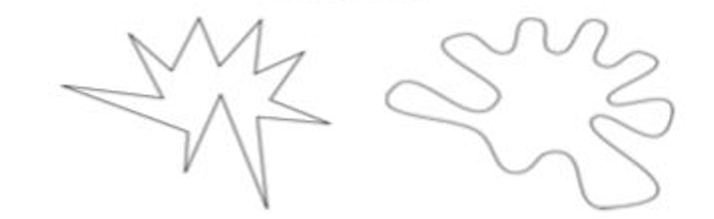

Background
Of the two shapes above, which one is "bouba", and which one is "kiki"? When asked this question, 95% choose "kiki" for the one on the left, and "bouba" for the right. Even though neurons activated by visual shape (photons hitting the eye in parallel) are very different from sound-driven sequentially activated hair cells in the ear, the brain extracts the abstract property of sharpness in Fourier space. Here, we asked: Does this sound-form symbolism play a role in the consolidation of memories? More specifically, is it easier to remember a congruent shape-sound pairing (e.g. jagged shape = "kiki") than an incongruent pairing (e.g. jagged shape + "bouba")?
Task
We planned a memory study, to test if congruent stimuli were better remembered that incongruent stimuli. I helped design 32 sound-shape pairs - 16 congruent, 16 incongruent After memorizing the shapes, we showed an 8 minute distractor video. Participants were later asked to choose the correct sound for 16 out of 32 presented shapes (8 congruent, 8 incongruent) from two choices: (1) Sound that the shape was initially paired with (2) sound that was presented with a different shape.
My resposibilities
I was involved in study and stimuli design. I helped set up the study and carried out part of the data collection.
Results
While our results did not yield statistical significance, the small, but consistent trend of better performance on congruent pairs across mutliple testing sessions and different sample sizes hints at a relationship that may emerge with further modified experiments. The project was later presented as a poster presentation at the Society for Neuroscience Conference in Chicago (2019).

- © Untitled
- Design: HTML5 UP